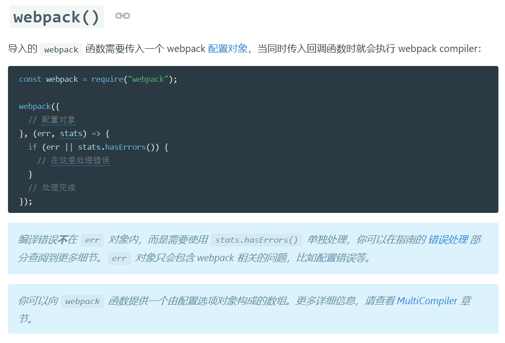
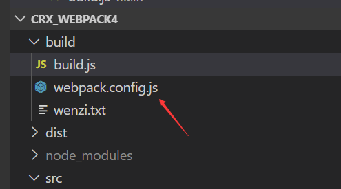
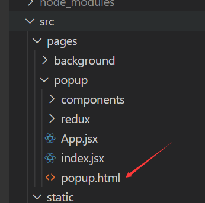
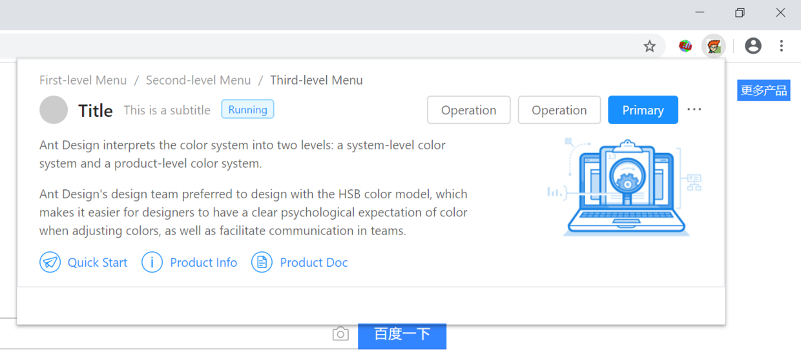

webpack简单多页面应用构建 webpack4+react构建crx项目
虽然说开发插件重要的不是页面而是功能性的 js，但是还是觉得 html 的部分使用框架开发页面更爽一些，所以我用 webpack 构建了一个 chrome 插件的项目，用来开发插件中的 popup/background/devtools 等页面
不过我是个菜鸡，没想好功能，js 也写不利索，先把项目搭起来写个页面美美 github 地址：https://github.com/ranmeizi/crx_webpack4
引用的包以及解决的问题
- wabpack： 帮你打包项目
- babel 一系列： 各种语法的翻译机
- react/antd/less ：使用 mvvm 框架和 ui 框架和 css 框架开发 html 真的很爽
新建项目
使用npm init 创建一个项目，新建一些文件夹，项目的目录结构大概是这样（你可以自己定）
--myproject
--build :用来存放 webpack 的入口和一些配置
--src :你的代码
--package.json npm init 帮你生成的项目配置文件
webpack
- 安装 webpack
需要安装 webpack 和 webpack-cli
npm install webpack webpack-cli --save-dev - 启动 webpack 我们使用 js 来启动 webpack，我们在 build 目录下新建一个 build.js,这个 js 里面运行 webpack() 参考文档：https://www.webpackjs.com/api/node/

添加一道 script
"scripts": {
"build": "node build/build.js"
},
然后使用 npm run build 就可以运行这段 build.js 这也就是我们 webpack 的入口啦。
- webpack 的配置
在 build 文件夹下再新建一个 webpack.config.js 这是 webpack 的配置参数

我们的需求是开发 popup/background/devtools 等页面，那就是多入口的 webpack 项目，很简单官网也有示例 https://www.webpackjs.com/configuration/entry-context/ 按照文档写法写好 entry 就好,我只写了 2 页面，同样的在 src 目录下新建你的入口 js
entry: {
'popup': ['./src/pages/popup/index.jsx'],
'background': ['./src/pages/background/index.jsx'],
},
新建 2 个入口的 html 文件

第一个问题：htmlWebpackPlugin:什么？我打包了 js 然后 html 呢？
js 中是创建了 react 的根组件，但是和 html 没有任何联系，这时候需要引用htmlWebpackPlugin
htmlWebpackPlugin 会把模板 html 页引用 entry 中的 js，在 chunks 中要注明你引用的哪几个入口 js，比如 popup 页，只需要引用 popup 的 js
plugins: [
//插件数组
new htmlWebpackPlugin({
//创建一个在内存中生成html页面插件的配置对象
template: path.join(__dirname, '../src/pages/background/background.html'), //指定模版页面生成内存中的hmtl
filename: 'background.html', //指定生成的页面名称
chunks: ['background'], //entry中的入口名
}),
new htmlWebpackPlugin({
template: path.join(__dirname, '../src/pages/popup/popup.html'),
filename: 'popup.html',
chunks: ['popup'],
}),
];
第二个问题：babel：啊？为什么他不认识我的 jsx 和 es567890？
当我写好 html 和 js 后，兴高采烈的输入 npm run build ，咔咔咔报错，不认识 es6 的语法，不认识 jsx 语法，那就要引入 babel 帮我们翻译
安装这三个模块
@babel/core
babel-loader
@babel/preset-react
npm install @babel/core babel-loader @babel/preset-react --save-dev
.js/.jsx 文件
在 module/rules 中添加 js 和 jsx 的 loader
module: {
rules: [{
test: /\.jsx?$/, // 用正则来匹配文件路径，这段意思是匹配 js 或者 jsx
loader: 'babel-loader', // 加载模块 "babel" 是 "babel-loader" 的缩写
// include: resolve("/src")
exclude: /node_modules/,
},
{
test: /\.js?$/, // 用正则来匹配文件路径，这段意思是匹配 js 或者 jsx
loader: 'babel-loader', // 加载模块 "babel" 是 "babel-loader" 的缩写
exclude: /node_modules/,
}]
},
jsx 在项目下新建 babel 配置文件.babelrc 里面添加配置,就能识别 jsx 语法啦
"presets": ["@babel/preset-react"],
第三个问题：babel：啊？我引用的 antd 怎么报@import 错啊？
安装 babel-plugin-import 模块
npm install babel-plugin-import --save-dev
在.babelrc 中添加配置
"plugins": [
["import", {
"libraryName": "antd",
"libraryDirectory": "es",
"style": true
}]
]
肯定还会报错，因为识别不了 style 语法和 less 语法，所以再引入 less 和 loader
npm install less less-loader style-loader css-loader --save-dev
在 webpack.config.js 中的 module/rules 添加一条 less 的配置
{
test: /\.less$/,
use: [
'style-loader',
{ loader: 'css-loader', options: { importLoaders: 1 } },
'less-loader'
]
}
第四个问题：crx:html 页面弄好了，那我的 manifest.json，conten_scripts 什么的呢？
manifest.json，conten_scripts 当作静态资源直接复制粘贴到 dist 目录下就好了
用shelljs模块帮我们执行命令
//复制static文件架中的东西
const assetsPath = path.join(__dirname, '../dist');
shell.rm('-rf', assetsPath);
shell.mkdir('-p', assetsPath);
shell.config.silent = true;
shell.cp('-R', 'src/static/*', assetsPath);
shell.config.silent = false;
终于不报错了，可以用框架开开心心的开发 html 页了
